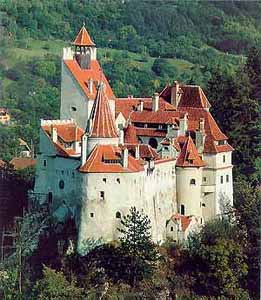

| prince |
| home page |
| . DracuLand_Contact Us_FAQ Is this page under construcion. There is any connection between Bran Castle and Vlad Dracula the Impaler. There are no evidences that he spent some time (or nights) in the Bran Castle. There are some places more Dracula related as Bran Castle. |
| The visitor is impressed by massiveness of building. . Ten years late, the castle has belonged to the voivode of Romanian country, Mircea cel Batran. After his death, the castle has belonged to princes of Transylvania. Vlad Tepes, well-known as Dracula (The Devil), made this castle his residence. |
|  |